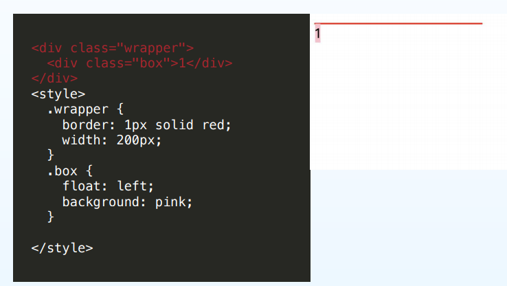
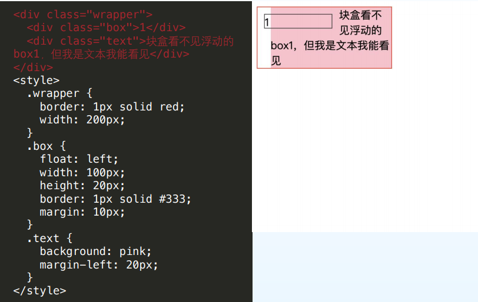

<!DOCTYPE html>
<html>
<head><meta name="generator" content="Hexo 3.9.0">
  <meta charset="utf-8">
  

  
  <title>css-float | SheilaTing 的博客呀</title>
  <meta name="viewport" content="width=device-width, initial-scale=1, maximum-scale=1">
  <meta name="description" content="浮动定义float 属性能让一个元素放在其容器的左侧或右侧，允许文本和内联元素环绕它。 设置浮动的元素从网页的普通流(normal flow)中脱离，但不是完全脱离 特性：一个浮动元素会向左或向右移动，直到其外边（outer edge）挨到包含块边沿 或者另一个浮动元素的外边。如果存在行盒，浮动元素的外top（边）会与当前行盒 的top（边）对齐 如果没有足够的水平空间来浮动，它会向下移动，直到位">
<meta name="keywords" content="css">
<meta property="og:type" content="article">
<meta property="og:title" content="css-float">
<meta property="og:url" content="http://yoursite.com/2020/04/11/css-float/index.html">
<meta property="og:site_name" content="SheilaTing 的博客呀">
<meta property="og:description" content="浮动定义float 属性能让一个元素放在其容器的左侧或右侧，允许文本和内联元素环绕它。 设置浮动的元素从网页的普通流(normal flow)中脱离，但不是完全脱离 特性：一个浮动元素会向左或向右移动，直到其外边（outer edge）挨到包含块边沿 或者另一个浮动元素的外边。如果存在行盒，浮动元素的外top（边）会与当前行盒 的top（边）对齐 如果没有足够的水平空间来浮动，它会向下移动，直到位">
<meta property="og:locale" content="default">
<meta property="og:image" content="http://yoursite.com/2020/04/11/css-float/eg2.png">
<meta property="og:image" content="http://yoursite.com/2020/04/11/css-float/eg1.png">
<meta property="og:updated_time" content="2020-04-15T04:11:43.214Z">
<meta name="twitter:card" content="summary">
<meta name="twitter:title" content="css-float">
<meta name="twitter:description" content="浮动定义float 属性能让一个元素放在其容器的左侧或右侧，允许文本和内联元素环绕它。 设置浮动的元素从网页的普通流(normal flow)中脱离，但不是完全脱离 特性：一个浮动元素会向左或向右移动，直到其外边（outer edge）挨到包含块边沿 或者另一个浮动元素的外边。如果存在行盒，浮动元素的外top（边）会与当前行盒 的top（边）对齐 如果没有足够的水平空间来浮动，它会向下移动，直到位">
<meta name="twitter:image" content="http://yoursite.com/2020/04/11/css-float/eg2.png">
  
    <link rel="alternate" href="/atom.xml" title="SheilaTing 的博客呀" type="application/atom+xml">
  
  
    <link rel="icon" href="/favicon.png">
  
  
    <link href="//fonts.googleapis.com/css?family=Source+Code+Pro" rel="stylesheet" type="text/css">
  
  <link rel="stylesheet" href="/css/style.css">
</head>
</html>
<body>
  <div id="container">
    <div id="wrap">
      <header id="header">
  <div id="banner"></div>
  <div id="header-outer" class="outer">
    <div id="header-title" class="inner">
      <h1 id="logo-wrap">
        <a href="/" id="logo">SheilaTing 的博客呀</a>
      </h1>
      
    </div>
    <div id="header-inner" class="inner">
      <nav id="main-nav">
        <a id="main-nav-toggle" class="nav-icon"></a>
        
          <a class="main-nav-link" href="/">Home</a>
        
          <a class="main-nav-link" href="/archives">Archives</a>
        
      </nav>
      <nav id="sub-nav">
        
          <a id="nav-rss-link" class="nav-icon" href="/atom.xml" title="RSS Feed"></a>
        
        <a id="nav-search-btn" class="nav-icon" title="Search"></a>
      </nav>
      <div id="search-form-wrap">
        <form action="//google.com/search" method="get" accept-charset="UTF-8" class="search-form"><input type="search" name="q" class="search-form-input" placeholder="Search"><button type="submit" class="search-form-submit">&#xF002;</button><input type="hidden" name="sitesearch" value="http://yoursite.com"></form>
      </div>
    </div>
  </div>
</header>
      <div class="outer">
        <section id="main"><article id="post-css-float" class="article article-type-post" itemscope itemprop="blogPost">
  <div class="article-meta">
    <a href="/2020/04/11/css-float/" class="article-date">
  <time datetime="2020-04-11T06:15:42.000Z" itemprop="datePublished">2020-04-11</time>
</a>
    
  </div>
  <div class="article-inner">
    
    
      <header class="article-header">
        
  
    <h1 class="article-title" itemprop="name">
      css-float
    </h1>
  

      </header>
    
    <div class="article-entry" itemprop="articleBody">
      
        <h4 id="浮动定义"><a href="#浮动定义" class="headerlink" title="浮动定义"></a>浮动定义</h4><p>float 属性能让一个元素放在其容器的左侧或右侧，允许文本和内联元素环绕它。 设置浮动的元素从网页的普通流(normal flow)中脱离，但不是完全脱离</p>
<p>特性：一个浮动元素会向左或向右移动，直到其外边（outer edge）挨到包含块边沿 或者另一个浮动元素的外边。如果存在行盒，浮动元素的外top（边）会与当前行盒 的top（边）对齐 如果没有足够的水平空间来浮动，它会向下移动，直到位置合适</p>
<p>因为浮动元素不在普通流内，在浮动盒之前或者之后创建的未定位的（nonpositioned）块盒会竖直排列，就像浮动不存在一样。然而，浮动元素之后的行盒 会进行必要的缩短，为了给浮动元素的margin box让出空间</p>
<h4 id="浮动元素的特性案例"><a href="#浮动元素的特性案例" class="headerlink" title="浮动元素的特性案例"></a>浮动元素的特性案例</h4><ul>
<li><p>浮动元素宽度是收缩的</p>
<p></p>
</li>
<li><p>对周边行内元素的影响</p>
<p>行内元素依旧可以发现浮动元素，例如文字环绕的实现；但改文字所在的div块级元素不会发现浮动元素，设置背景色依然会覆盖浮动元素；</p>
<p></p>
</li>
<li><p>浮动元素呈现块级特性</p>
<p>浮动的行内元素可以设置宽度、高度、内外边距</p>
<a id="more"></a>
</li>
</ul>
<h4 id="使用场景"><a href="#使用场景" class="headerlink" title="使用场景"></a>使用场景</h4><p>  两栏布局  三栏布局  导航条等</p>
<p>  注意在做导航条时，如果想让列表的顺序不变可以先整体浮动，然后在li浮动</p>
<h4 id="浮动副作用"><a href="#浮动副作用" class="headerlink" title="浮动副作用"></a>浮动副作用</h4><ol>
<li>对后续元素位置产生影响 因为其他元素无法发现浮动元素</li>
<li><p>父容器无法包裹子元素  因为父元素的高度为0</p>
<h4 id="清除浮动"><a href="#清除浮动" class="headerlink" title="清除浮动"></a>清除浮动</h4><p>clear: left • 要求该盒的top border边位于源文档中在此之前的元素形成的所 有左浮动盒的底边下方 (也就是说清除该元素前面元素左侧具有的浮动特性带来的影响，位于下方)</p>
<p>clear: right • 要求该盒的top border边位于源文档中在此之前的元素形成的所 有右浮动盒的底边下方</p>
<p>clear: both • 要求该盒的top border边位于源文档中在此之前的元素形成的所 有左浮动盒和右浮动盒的底边下方</p>
<h4 id="清除浮动-1"><a href="#清除浮动-1" class="headerlink" title="清除浮动"></a>清除浮动</h4><figure class="highlight css"><table><tr><td class="gutter"><pre><span class="line">1</span><br><span class="line">2</span><br><span class="line">3</span><br><span class="line">4</span><br><span class="line">5</span><br></pre></td><td class="code"><pre><span class="line"><span class="selector-class">.clearfix</span><span class="selector-pseudo">::after</span> &#123;</span><br><span class="line">	<span class="attribute">content</span>: <span class="string">''</span>;</span><br><span class="line">	<span class="attribute">display</span>: block;</span><br><span class="line">	<span class="attribute">clear</span>: both;</span><br><span class="line">&#125;</span><br></pre></td></tr></table></figure>
<p>一般采用该方式，在父元素上添加该css 即可，当然还有其他方式可以用来清除浮动，例如，父元素设置 overflow:hidden ； 形成BFC来清除浮动</p>
<p>该方式相当于给父级元素添加一个新的空标签，在父元素最后面新增一个空内容来实现；</p>
</li>
</ol>

      
    </div>
    <footer class="article-footer">
      <a data-url="http://yoursite.com/2020/04/11/css-float/" data-id="cka6c0mp000016cw1ut27ll3e" class="article-share-link">Share</a>
      
      
  <ul class="article-tag-list"><li class="article-tag-list-item"><a class="article-tag-list-link" href="/tags/css/">css</a></li></ul>

    </footer>
  </div>
  
    
<nav id="article-nav">
  
    <a href="/2020/04/13/css案例总结/" id="article-nav-newer" class="article-nav-link-wrap">
      <strong class="article-nav-caption">Newer</strong>
      <div class="article-nav-title">
        
          css案例总结
        
      </div>
    </a>
  
  
    <a href="/2020/04/10/markdown-常用语法/" id="article-nav-older" class="article-nav-link-wrap">
      <strong class="article-nav-caption">Older</strong>
      <div class="article-nav-title">markdown 常用语法</div>
    </a>
  
</nav>

  
</article>

</section>
        
          <aside id="sidebar">
  
    

  
    
  <div class="widget-wrap">
    <h3 class="widget-title">Tags</h3>
    <div class="widget">
      <ul class="tag-list"><li class="tag-list-item"><a class="tag-list-link" href="/tags/JS/">JS</a></li><li class="tag-list-item"><a class="tag-list-link" href="/tags/bom/">bom</a></li><li class="tag-list-item"><a class="tag-list-link" href="/tags/css/">css</a></li><li class="tag-list-item"><a class="tag-list-link" href="/tags/dom/">dom</a></li><li class="tag-list-item"><a class="tag-list-link" href="/tags/js/">js</a></li><li class="tag-list-item"><a class="tag-list-link" href="/tags/summary/">summary</a></li><li class="tag-list-item"><a class="tag-list-link" href="/tags/webpack/">webpack</a></li><li class="tag-list-item"><a class="tag-list-link" href="/tags/对象/">对象</a></li><li class="tag-list-item"><a class="tag-list-link" href="/tags/正则表达式/">正则表达式</a></li><li class="tag-list-item"><a class="tag-list-link" href="/tags/网站建站案例练习/">网站建站案例练习</a></li><li class="tag-list-item"><a class="tag-list-link" href="/tags/递归/">递归</a></li></ul>
    </div>
  </div>


  
    
  <div class="widget-wrap">
    <h3 class="widget-title">Tag Cloud</h3>
    <div class="widget tagcloud">
      <a href="/tags/JS/" style="font-size: 10px;">JS</a> <a href="/tags/bom/" style="font-size: 10px;">bom</a> <a href="/tags/css/" style="font-size: 20px;">css</a> <a href="/tags/dom/" style="font-size: 10px;">dom</a> <a href="/tags/js/" style="font-size: 15px;">js</a> <a href="/tags/summary/" style="font-size: 10px;">summary</a> <a href="/tags/webpack/" style="font-size: 10px;">webpack</a> <a href="/tags/对象/" style="font-size: 10px;">对象</a> <a href="/tags/正则表达式/" style="font-size: 10px;">正则表达式</a> <a href="/tags/网站建站案例练习/" style="font-size: 10px;">网站建站案例练习</a> <a href="/tags/递归/" style="font-size: 10px;">递归</a>
    </div>
  </div>

  
    
  <div class="widget-wrap">
    <h3 class="widget-title">Archives</h3>
    <div class="widget">
      <ul class="archive-list"><li class="archive-list-item"><a class="archive-list-link" href="/archives/2020/05/">May 2020</a></li><li class="archive-list-item"><a class="archive-list-link" href="/archives/2020/04/">April 2020</a></li><li class="archive-list-item"><a class="archive-list-link" href="/archives/2019/08/">August 2019</a></li><li class="archive-list-item"><a class="archive-list-link" href="/archives/2019/07/">July 2019</a></li><li class="archive-list-item"><a class="archive-list-link" href="/archives/2019/06/">June 2019</a></li><li class="archive-list-item"><a class="archive-list-link" href="/archives/2018/04/">April 2018</a></li></ul>
    </div>
  </div>


  
    
  <div class="widget-wrap">
    <h3 class="widget-title">Recent Posts</h3>
    <div class="widget">
      <ul>
        
          <li>
            <a href="/2020/05/14/http-TCP/">http-TCP</a>
          </li>
        
          <li>
            <a href="/2020/05/12/近日案例总结/">近日案例总结</a>
          </li>
        
          <li>
            <a href="/2020/05/12/js-事件/">js 事件</a>
          </li>
        
          <li>
            <a href="/2020/05/10/css-定位/">css 定位</a>
          </li>
        
          <li>
            <a href="/2020/05/09/Bom-浏览器对象/">Bom 浏览器对象</a>
          </li>
        
      </ul>
    </div>
  </div>

  
</aside>
        
      </div>
      <footer id="footer">
  
  <div class="outer">
    <div id="footer-info" class="inner">
      &copy; 2020 John Doe<br>
      Powered by <a href="http://hexo.io/" target="_blank">Hexo</a>
    </div>
  </div>
</footer>
    </div>
    <nav id="mobile-nav">
  
    <a href="/" class="mobile-nav-link">Home</a>
  
    <a href="/archives" class="mobile-nav-link">Archives</a>
  
</nav>
    

<script src="//ajax.googleapis.com/ajax/libs/jquery/2.0.3/jquery.min.js"></script>


  <link rel="stylesheet" href="/fancybox/jquery.fancybox.css">
  <script src="/fancybox/jquery.fancybox.pack.js"></script>


<script src="/js/script.js"></script>


  </div>
</body>
</html>